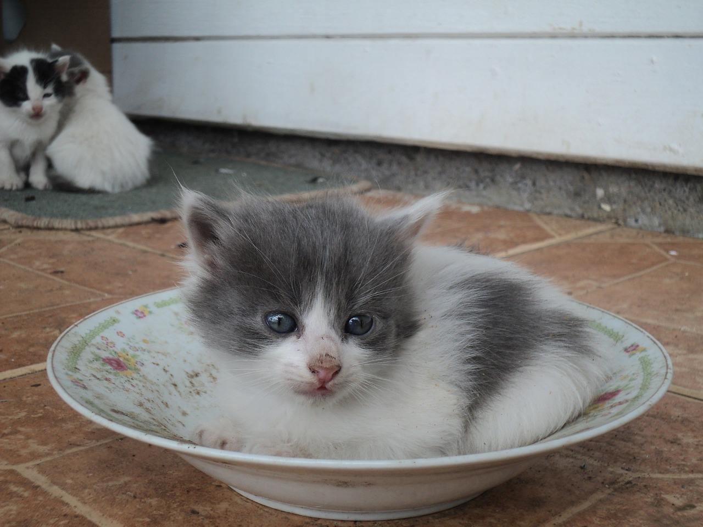

Cute Kitten Subtraction
Here is your subtraction problem. It comes with lots of kittens who want to help you solve it! Use graph paper or your white board to line up the numbers the right way and then subtract!
First Number
minus
Second Number
The Answer
Click this little kitten to show the answer.
Click the Paw Print to get a new problem!
